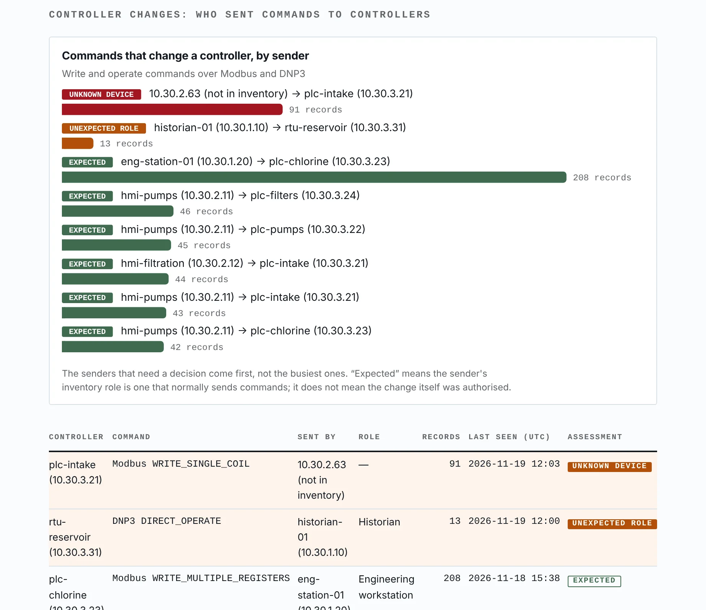

Visibilidad profunda de redes OT y TI
Sepa qué ocurrió en la red de su planta y qué hacer al respecto.
Historian lee el historial de red que un sensor ha recogido en su planta y lo convierte en un informe y en una lista de cosas sobre las que actuar.
- 3
- vistas de un mismo informe: dirección, responsables de OT y quienes hacen el trabajo
- 22
- indicadores de actividad de agentes de IA en el catálogo
- 3
- listas sobre las que actuar: riesgos, incidentes y tareas
- 0
- escrituras en la red de su planta
01 Solo escucha
No se instala nada en sus controladores ni se les envía nada.
Un punto de captura en la planta registra una copia del tráfico y la entrega al sensor de red de la planta. Historian hace preguntas al sensor con una cuenta de solo lectura. Nunca escribe en el sensor ni en la red, y nunca pide las contraseñas que ve pasar por el cable, solo cuántas fueron.
- Un sensor de red por planta, cada uno con el historial de esa planta
- El sensor es Malcolm, el conjunto de análisis de tráfico de red de código abierto, y sigue siendo un sistema independiente
- No hay que abrir ningún puerto a internet: los sensores e Historian se encuentran en una red privada
- Funciona en su propio servidor
- Red de la planta
- Punto de captura
- Sensor de red
- Historian
- Riesgos, incidentes, tareas
02 ¿Se puede confiar en estas cifras?
El informe empieza diciendo hasta qué punto se pudo observar la planta.
Una planta que está en silencio porque su sensor estaba caído nunca debe leerse como una planta donde no pasó nada. Por eso cada informe empieza con lo que registraron los sensores, dónde están los huecos y si las cifras que siguen son completas o son mínimos.
- Puntos de captura que entregan datos, y cuándo lo hizo cada uno por última vez
- Huecos en el registro, indicados al minuto
- Si el sensor rechaza una pregunta, el informe se genera igualmente y dice qué falta

03 Hallazgos, por gravedad
Cada hallazgo indica por qué importa, qué hacer y la evidencia.
Un hallazgo es algo observado en el periodo que requiere una decisión. Los más graves van primero, y cada uno puede rastrearse hasta los registros que lo respaldan.
- Contraseñas enviadas en claro, contacto con direcciones maliciosas conocidas, dispositivos que no están en el inventario
- Tendencias frente al periodo anterior, para ver si el riesgo sube o baja
- PDF, Excel y PowerPoint desde cada página

04 Un informe, tres lectores
La dirección y los responsables de OT hacen preguntas distintas. Cada uno tiene su propia vista.
El resumen ejecutivo responde en una página. La vista del responsable de OT baja hasta el controlador. El informe completo lleva la evidencia para quien hace el trabajo.
Preguntas para la dirección
- ¿El riesgo sube o baja?
- ¿Sabemos qué hay en nuestra red?
- ¿Están separadas las zonas de la red?
- ¿Los dispositivos de planta hablan con internet?
- ¿Quién tiene acceso remoto a la planta?
- ¿Se vio a atacantes conocidos?
- ¿Se movió malware por la red?
- ¿Qué comportamiento de atacante se observó, en términos de MITRE ATT&CK?
Preguntas para los responsables de OT
- ¿Quién envió comandos a los controladores?
- ¿Quién habla con cada controlador?
- ¿Qué cambió respecto al periodo anterior?
- ¿Los controladores se comunican sin errores?
- ¿Qué protocolos industriales hay en la red?
- ¿Qué se sabe de cada dispositivo de planta?
- ¿Qué prácticas débiles u obsoletas se usan?
- ¿Qué software y qué versiones se vieron?

05 Agentes de IA en la red
Vea qué máquinas se comportan como un programa y no como una persona.
Los agentes de IA están llegando a las redes de oficina y de planta, aprobados o no. Historian reúne cada equipo que muestra un indicador de actividad de IA, lo que hizo en la red y si está en su lista de aprobados.
- Un catálogo de indicadores, y cuáles mostró cada equipo
- Los equipos que además actuaron en la red se marcan como preocupantes
- Grupos de equipos que trabajan de forma coordinada

06 Conclusiones
El informe termina en tres listas sobre las que alguien puede actuar.
Los riesgos van a un registro, los incidentes a un SOC y las tareas a una cola. Cada valoración lleva la regla que la produjo, porque son primeras lecturas de un solo periodo de tráfico y la página lo dice.
- Envíe las tres listas a un registro de SpaceRisk con un botón. No se envía nada hasta que se pulsa
- Volver a enviar actualiza lo enviado antes y nunca crea una segunda copia
- Exportaciones para un SIEM (OCSF) y para Jira, ServiceNow o un buzón, además de Excel y PowerPoint
Para el registro de riesgos
Riesgos
Una debilidad persistente, valorada como probabilidad por consecuencia, cada una de 1 a 5, y asignada a un responsable.
Para el SOC
Incidentes
Algo que ha ocurrido y requiere respuesta ahora.
Para una cola
Tareas
Un trabajo concreto con una cola, una fecha límite y una forma de saber cuándo está terminado.

07 Todas las plantas a la vez
Ordene sus plantas por lo que hay que decidir.
Con más de una planta las tiene una junto a otra: cuál necesita atención primero, qué ocurre en varias frente a lo que ocurre en una sola, y cuáles no pudieron supervisarse por completo.
- Cada fila abre el informe de esa planta
- Los hallazgos que comparten varias plantas se muestran juntos
- Lo no vigilado nunca se muestra como tranquilo

Vea a Historian leer su propia red.
Háblenos de sus plantas y le mostraremos el informe primero con datos simulados y después con los suyos.